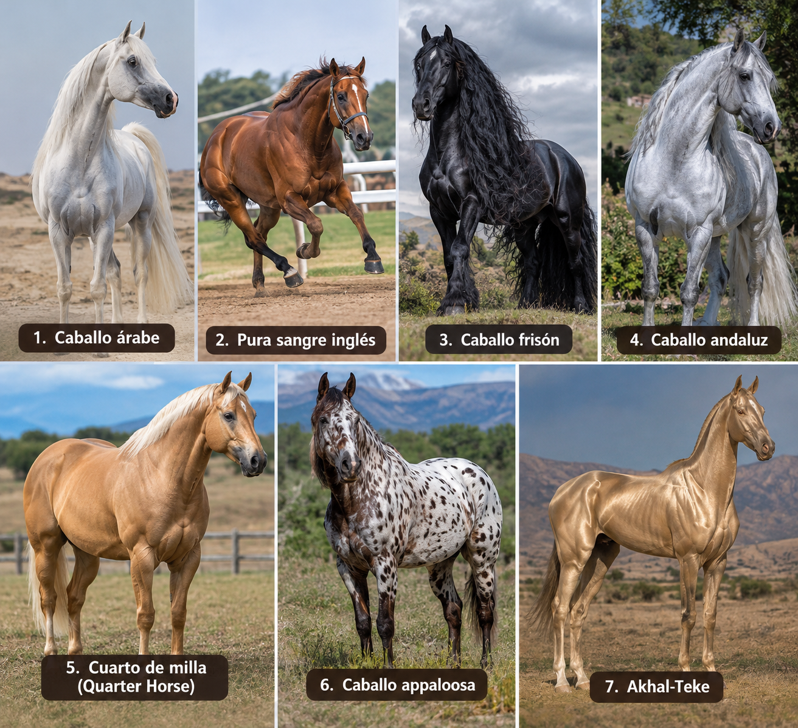

Elegancia,fuerza,velocidad y belleza en un solo
lugar

Un mundo lleno de belleza
Los caballos son animales inteligentes,fuertes y
elegantes.durante siglos han acompañado el ser
humano en el transporte,el trabajo,las
competencias deportivas y las actividades
ecuestres.Existen muchas razas y cada una tiene
caracteristicas especiales.Aqui conoceras siete de
las mas descatacadas por su belleza,velocidad,
resistencia y habilidades.